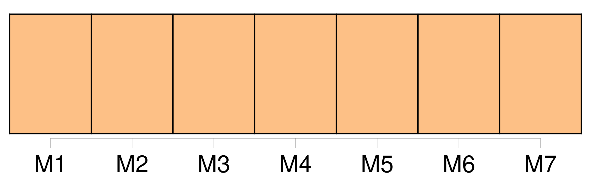
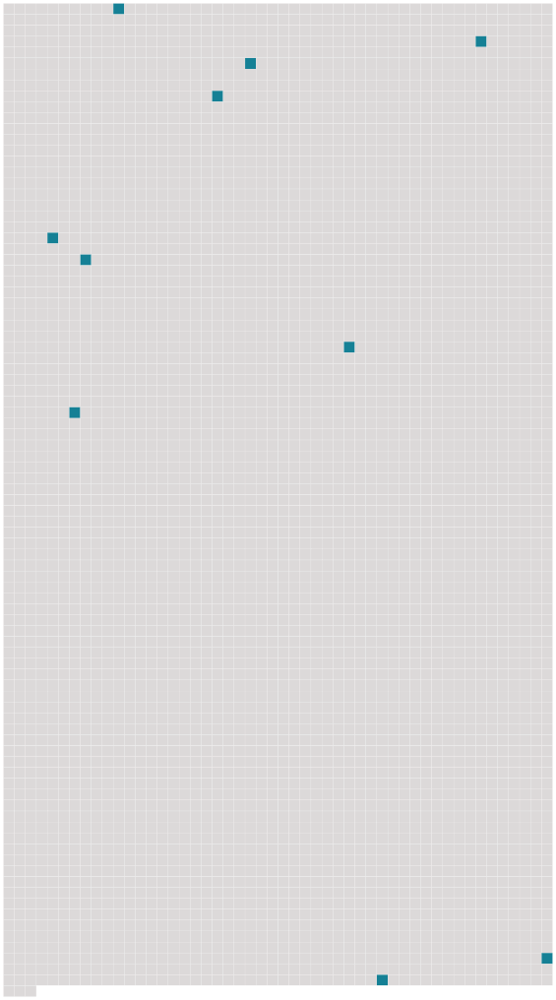

Longueur nb maillons : 10 mentions |
  |
La pluie tombait à flots, une pluie normande qu' [on] aurait dit jetée par une main furieuse, une pluie en biais, épaisse comme un rideau, formant une sorte de mur à raies obliques, une pluie cinglante, éclaboussante, noyant tout, une vraie pluie des environs de Rouen, ce pot de chambre de la France. [2 phrases]
Il avait des yeux bleus, froids et doux, une joue fendue d'un coup de sabre dans la guerre d'Autriche ; et [on] le disait brave homme autant que brave officier. [1 phrases]
Deux dents perdues dans une nuit de noce, sans qu'il se rappelât au juste comment, lui faisaient cracher des paroles épaisses qu' [on] n'entendait pas toujours ; et il était chauve du sommet du crâne seulement, tonsuré comme un moine, avec une toison de petits cheveux frisés, dorés et luisants, autour de ce cerceau de chair nue. [2 phrases]
Comme [on] grattait à la porte, le commandant cria d'ouvrir, et un homme, un de leurs soldats automates, apparut dans l'ouverture, disant par sa seule présence que le déjeuner était prêt. [19 phrases] [On] préparera ici un souper ; rien ne manque d'ailleurs, et, au moins, nous passerons une bonne soirée. [3 phrases]
C'était un vieux sous-officier qu' [on] n'avait jamais vu rire, mais qui accomplissait fanatiquement tous les ordres de ses chefs, quels qu'ils fussent. [15 phrases]
Non qu' [on] les eût pillés, le major comte de Farlsberg ne l'aurait point permis ; mais Mlle Fifi, de temps en temps, faisait la XXXmineXXX ; et tous les officiers, ce jour -là, s'amusaient vraiment pendant cinq minutes. [6 phrases]
» [84 phrases]
» [1 phrases]
Tous poussèrent un rugissement, et se levèrent en tumulte ; mais ayant jeté sa chaise dans les jambes du lieutenant Otto, qui s'écroula tout au long, elle courut à la fenêtre, l'ouvrit avant qu' [on] eût pu l'atteindre et s'élança dans la nuit, sous la pluie qui tombait toujours. |
 |
La ressource peut être téléchargée sur la page Ortolang
Si vous avez des questions ou vous voyez des erreurs, merci d'envoyer un mail à silvia.federzoni89@gmail.com
Site développé par S. Federzoni (contact)